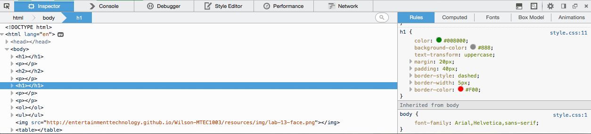

Lab 12, Part 2 - CSS
Overview
- style a page using CSS
Instructions
Prep Work
- USE THE SAME HTML FILE USED IN THE PREVIOUS LAB AS YOUR STARTING POINT!
- in Terminal change to your /lab-12-html folder
- use pwd to make sure you’re in the right directory!
Style Your Page With CSS
Include an External CSS File
- open up your text editor (e.g. SublimeText, Atom, VS Code, etc.)
- if you don’t have index.html already open, go to the top menu bar, click on File→Open
- browse to home→Desktop→usernamefolder→lab-12-html→index.html
- create a new file by going to File→New
- immediately save your new file by going to File→Save As
- browse to home→Desktop→usernamefolder→lab-12-html
- name your file style.css
- add this to style.css
p {
color: red;
}
- add your external css file to your page
- in your <head> tag
- add… <link rel="stylesheet" href="style.css">
- view your page by opening it in your browser (double click on the file from finder or Option-click→Open With)
- you should see your paragraph tags in red
Changing Color and Text
(view your page after each modification)
- using the color property:
- change your largest header (h1) to green using hex values (try #008000 or look up another)
- change your paragraphs so that they’re blue using hex values (e.g. #0000FF)
- change the background color on all headers (h1 and h2) so that they’re gray (maybe something like #888888)
- use font-family on body to change all of your text to sans-serif
- use font-size on all paragraphs to make the text 12px (see link above for a reference)
- use text-decoration on all paragraphs … try line-through
- use text-decoration on your second largest header (h2) … try underline
- use text-transform on your largest header (h1) to change to uppercase
- view your page
- use git to check the status, add to staging, and commit (don’t forget the -m ‘message’ part)
Margins, Padding and Border
- add 20px margin to your largest header (h1)
- add 40px padding to your largest header (h1)
- add a 5 pixel wide, dashed, red border around your largest header (h1)
- use git to check the status, add to staging, and commit (don’t forget the -m ‘message’ part)
Using Chrome Inspector or Firebug
- Right click on your h1 heading and choose "Inspect Element"
- You should see something like this: 
- Like with JavaScript, the console can be very helpful in debugging CSS/HTML.
Classes, IDs, Grouped Selectors
In index.html…
- add an id selector (use div tag with id= ___) to your first paragraph called intro
- add a class selector (use inline with class=___) to your first header (h1) called spotlight
In style.css…
- add a ID (#yyy) selector for #intro
- set the border to one pixel, solid, black
- add a CLASS (.zzz) selector for .spotlight
- set the background-color to yellow (try #FEFE22)
- remove any color properties from your h2 and paragraph selectors
- group h2 and p so that their color is dark green
- use git to check the status, add to staging, and commit (don’t forget the -m ‘message’ part)